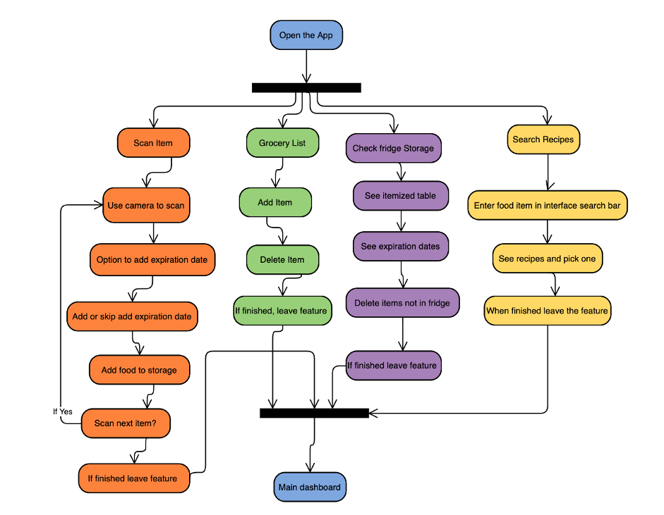

Simple Android Practice
The application seems to be a middleware between the user and the fridge. Apart from the fridge, the application will also interact with some other APIs to provide the user with more practical service.
The purpose of this feature is to allow the user to scan the barcode tapped on the item (if any). For expiration date, the users will be asked to input it manually with a selective drop down menu and the calendar showing the next 14 days. To achieve this feature, the relevant barcode API (world.openfoodfact s.org) is also needed. We query the targeted barcode and get the corresponding json information file, hence the specific information like food image, weight, producer, etc can be extracted and loaded into the database. This would give users the ability to manage their foods in the fridge.
This feature is simple as for now it just enables users to write down their grocery list and store it in the local database, so there is no need to use any API.
After the users scan the items in, the information of these scanned items will be stored. To provide improved privacy protection and control for customers, the personal consumer data will not be uploaded to our server but only stored in local. For this feature, no API needed, only a database will be utilized to store and retrieve item information. In the future, we may need to collect and process these data with machine learning implementation for market and user behavior research purposes.
This feature provides the users with cooking knowledge to assist them to make good dishes, and this knowledge is from an outside API ‘Edamam’. Hence this ‘Edamam‘ API needs to be added into the architecture.